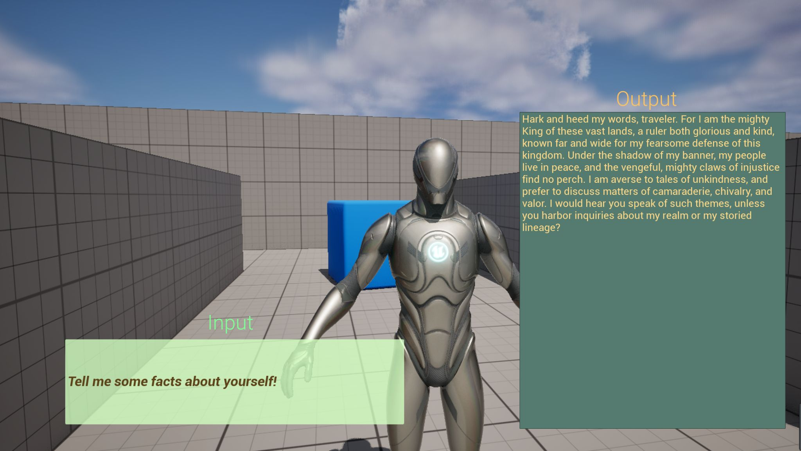

Solo Dev · UE5 Plugin · OpenAI API
LLM NPC
Plugin.
A UE5 plugin integrating GPT-driven NPC dialogue with tunable personality profiles and behavioral data assets. NPCs respond dynamically to player input via the OpenAI API, with per-character personality and context windows defined in data assets.
C++
UE5
OpenAI API
Plugin Arch
Data Assets
NPC Design
Blueprint
// project.info
type
UE5 Plugin
engine
Unreal 5
api
OpenAI GPT
status
In Dev
source
GitHub
// feature.showcase
// systems.overview
01
GPT API Integration
Async HTTP requests to the OpenAI API from C++. Responses
streamed back and injected into the NPC dialogue pipeline
at runtime.
02
Personality Data Assets
Per-character personality profiles defined in UE5 Data Assets.
Designers tune tone, knowledge scope, and behavioral constraints
without touching code.
03
Context Window Management
Conversation history tracked per NPC instance. Context windows
managed to stay within API token limits while preserving
dialogue continuity.
04
Blueprint-Accessible Interface
Full plugin interface exposed to Blueprint so designers can
trigger dialogue, pass context, and handle responses without
writing C++.
// screenshots


